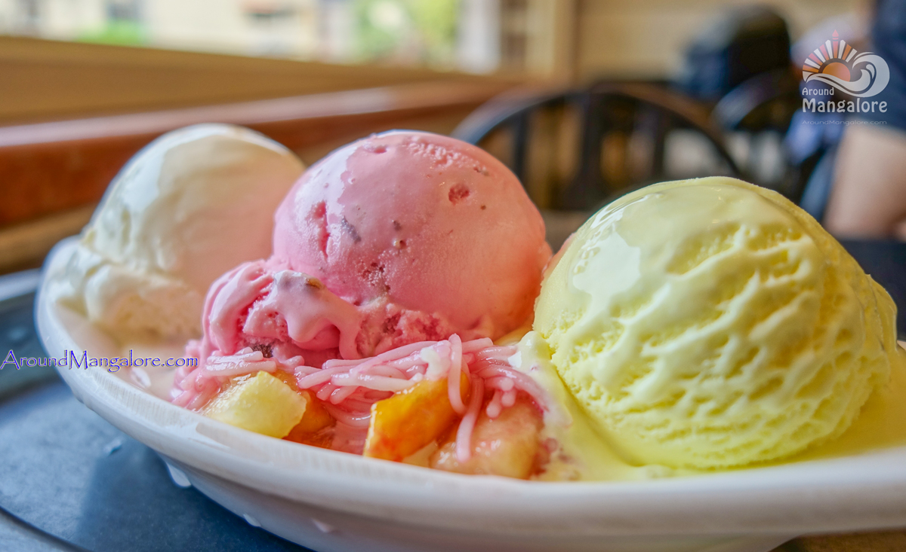

Dilkush

INGREDIENTS
->Heavy whipping cream - 1 cup
->Rose petal jam (gulkand) - 2 tbsp
->Rose syrup - 2- 3tbsp
->Condensed milk - 1/4 cup
->Cashew (finely chopped) - 1 tbsp
->Almond (finely chopped) - 1 tbsp
->Raisins (finely chopped) - 1 tbsp
->Pistachio (finely chopped) - 1 tbsp
->Tutti frutti - 1 tbsp
->Vanilla essence - 2-3 drops
->Milk - 1/4 cup
Step 1:
Heat milk in a pan and give it a boil.
Step 2:
Now add finely chopped cashew along with almond, pistachio and raisins.
Step 3:
Cook and stir over medium to low flame till milk evaporates completely. Switch off the flame and let it cool down completely.
Step 4:
Meanwhile whip heavy whipping cream till it gets soft peak.
Step 5:
In another bowl, add condensed milk followed by rose petal jam, vanilla essence, tutti frutti and rose syrup. Mix well.
Step 6:
Now fold in prepared condensed milk mixture followed by prepare nut mixture into whipped cream.
Step 7:
Now fold in prepared condensed milk mixture followed by prepare nut mixture into whipped cream.